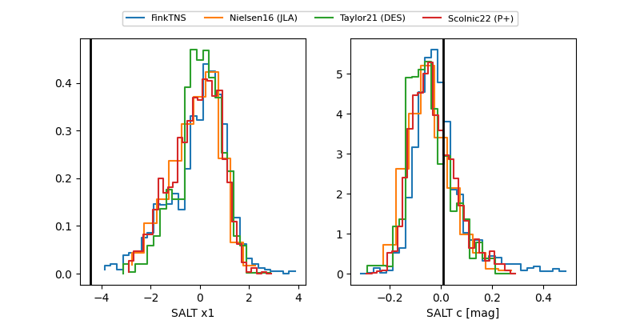

FINK: ZTF25abmknsi
Lasair: ZTF25abmknsi
ALeRCE: ZTF25abmknsi
ZTF25abmknsi (ztf,fink)
equatorial (ra, dec) = (353.1287,-18.79246)
galactic (l, b) = (53.4532,-70.04635)

last ztfg=19.93, ztfr=19.89
1 ztfg, 2 ztfr detections